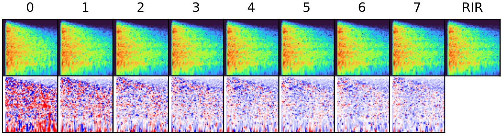
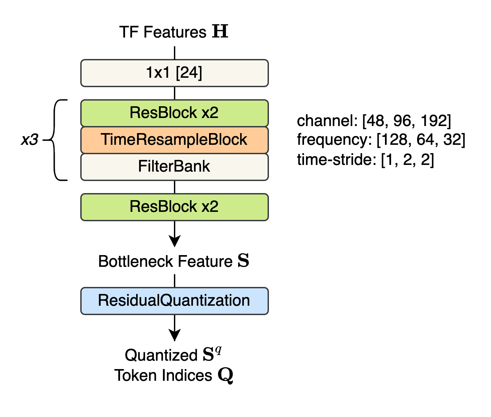
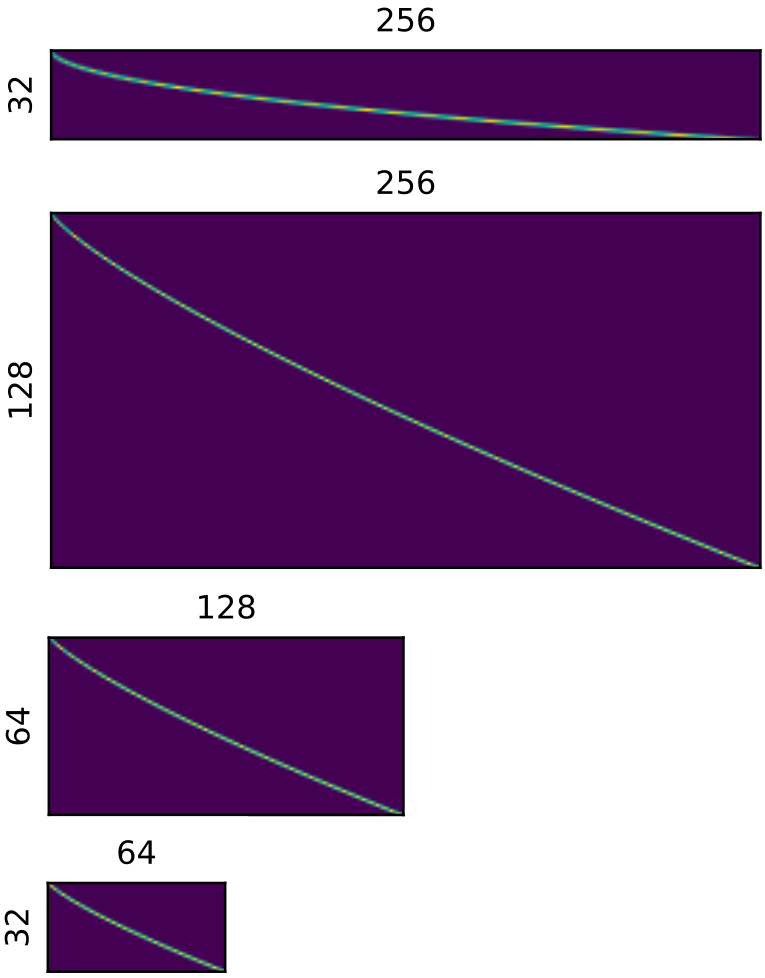

<center>
<table style="max-width:600px; border:0px;">
<tr>
<td style="max-width:600px; border:0px;">
<center>
<h3>Discrete Representation Learning with RQ-VAE</h3>
<small>


<p class="small">
</center>
<b>Residual quantization allows accurate reconstruction. </b>
We autoencode the time-frequency representation of the while discritizing the bottleneck feature. By discretizing each vector of the feature map iteratively, we gradually obtain finer and more accurate reconstruction. The figure shows reconstruction with quantization depth from 0 to 7. We observed that the 3 codebooks were sufficient for the perceptual quality.
</p>
<center>

<p class="small">
</center>
<b>RQ-VAE architecture.</b>
We follow the conventional autoencoder architecture, which alternates the resampling block (downsampling for the encoder part and upsampling for the decoder part) and the refining residual block. Specifically, we combine two ResBlocks, one TimeResampleBlock, and one FilterBank, forming a single stage. After a 1x1 pre-linear layer,we pass our feature map with three stages, where the channels are doubled when passing through each TimeResampleBlock. After applying additional two ResBlocks, we obtain a bottleneck feature S. 
Then, the residual quantization is performed to obtain a quantized latent and its corresponding token indices.
<center>
</p>
<br>


<p class="small">
</center>
<b>Mel-like gradual filterbanks. </b> Resampling the frequency axis may lead to the overcompression of the low-frequency region, which is harmful for the reconstruction quality. In response of this, we use a series of filterbanks that when multiplied (top matrix of the figure), it has nonlinear mapping similar to the Mel scale.
<center>
</p>
<br>
</small>
</td>
</tr>
</table>
